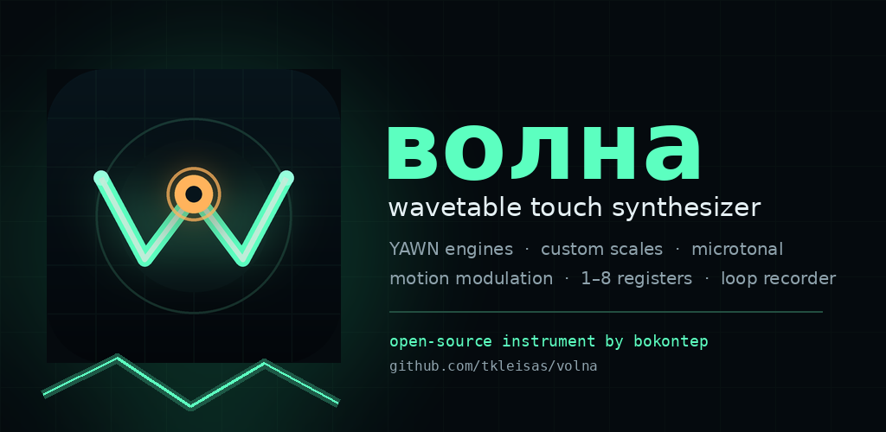
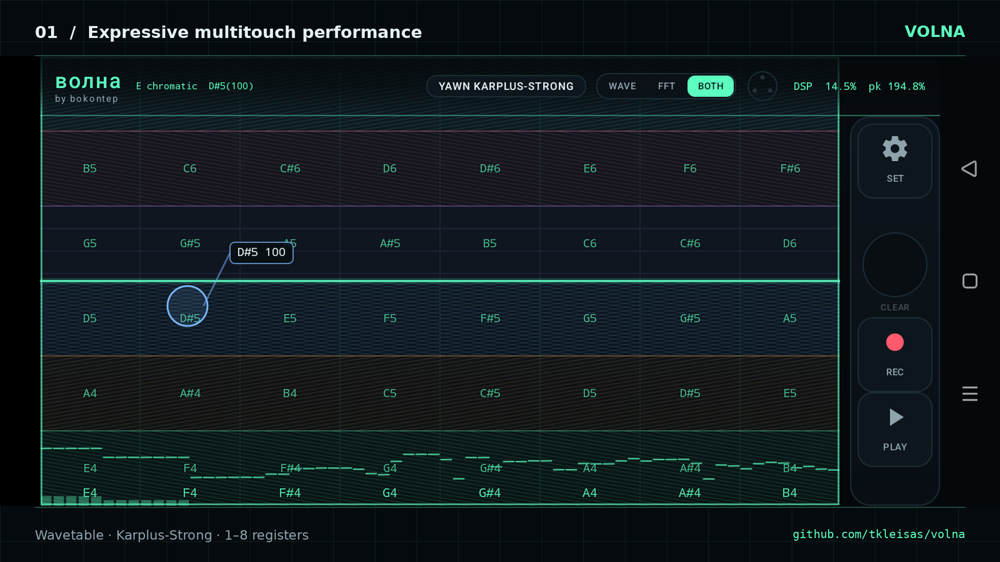
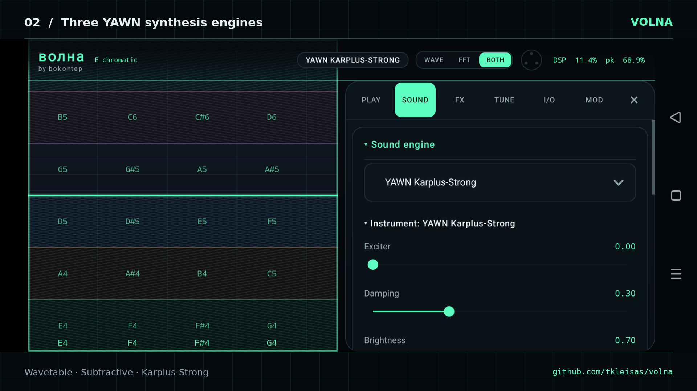
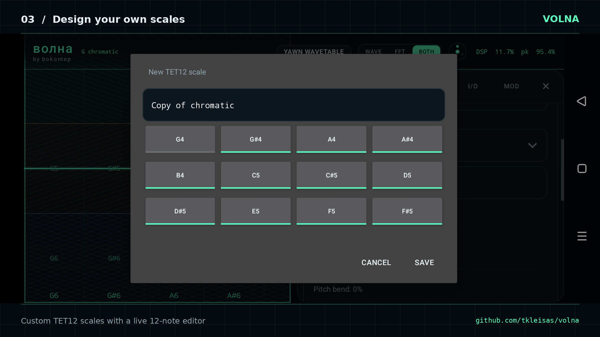
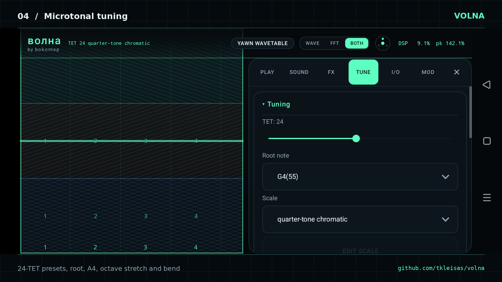
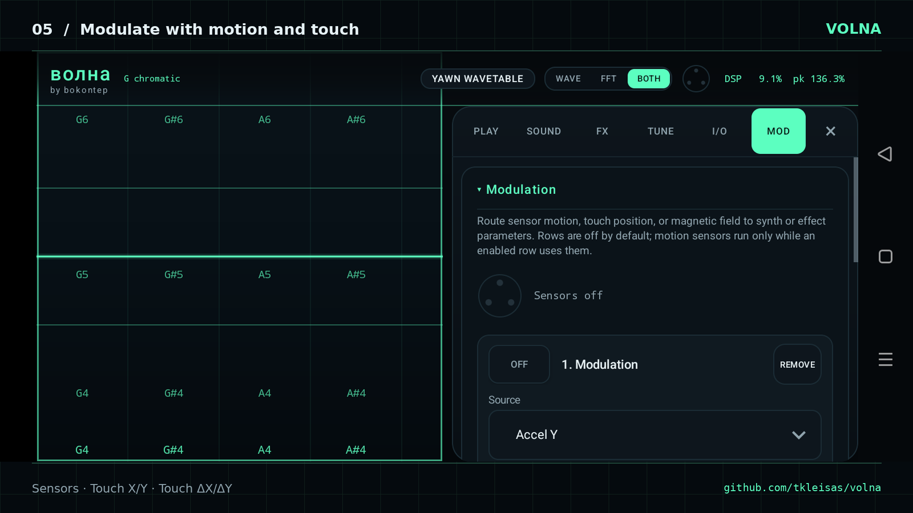

Four synthesis engines
Volna Classic, YAWN Wavetable, YAWN Subtractive, and YAWN Karplus-Strong — including per-note pitch bend.
Open-source Android instrument
Volna is a landscape multitouch wavetable and physical-modelling synthesizer. Shape notes, registers, timbre and modulation directly on a full-bleed performance surface.

Built for performance
Every part of the surface is playable. Move horizontally for pitch, vertically across registers, and use pressure or motion when the device exposes it.
Volna Classic, YAWN Wavetable, YAWN Subtractive, and YAWN Karplus-Strong — including per-note pitch bend.
Up to ten fingers, one to eight color-coded registers, note callouts, and a full-surface scope with waveform and spectrum.
TET 2–48, custom TET12 scales, 24-TET presets, root and A4 tuning, octave stretch, and an optional pitch-bend depth.
Set 1–8 vertical registers in semitones or scale steps. Use octave, power, major, minor, and standard-guitar string presets.
Route accelerometer, gyro, magnetometer, Touch X/Y, and relative Touch ΔX/ΔY to synth and audio-effect destinations.
Record a 60-second loop with seam crossfade, edit MIDI and audio chains, and connect MPE, Android MIDI, or RTP-MIDI.
Inside Volna
Engine controls, scale design, microtonal tuning, and a modulation matrix live alongside the performance surface.





Android release
Download the latest signed APK from GitHub, or build the project yourself with the Android SDK and NDK. Volna is open source under the MIT license.
Privacy
Volna does not require an account and does not include analytics, advertising, or tracking. Preferences, imported wavetables, and scale/register settings are stored on the device. RTP-MIDI only sends to the host you configure.